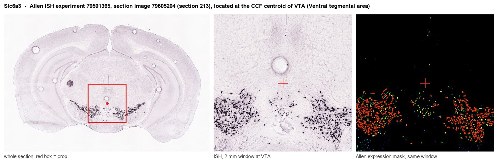
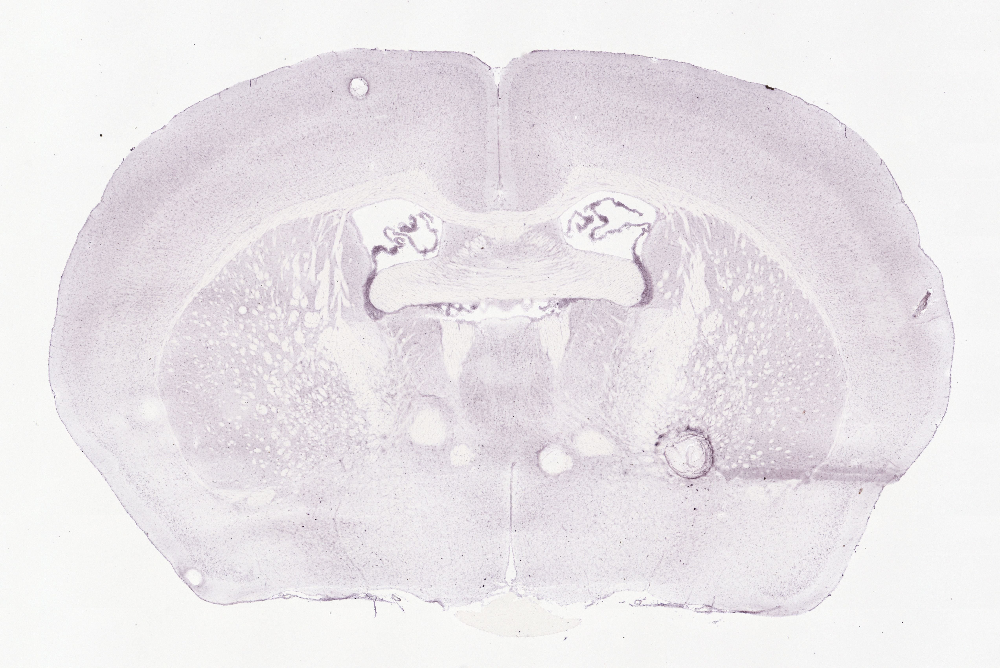
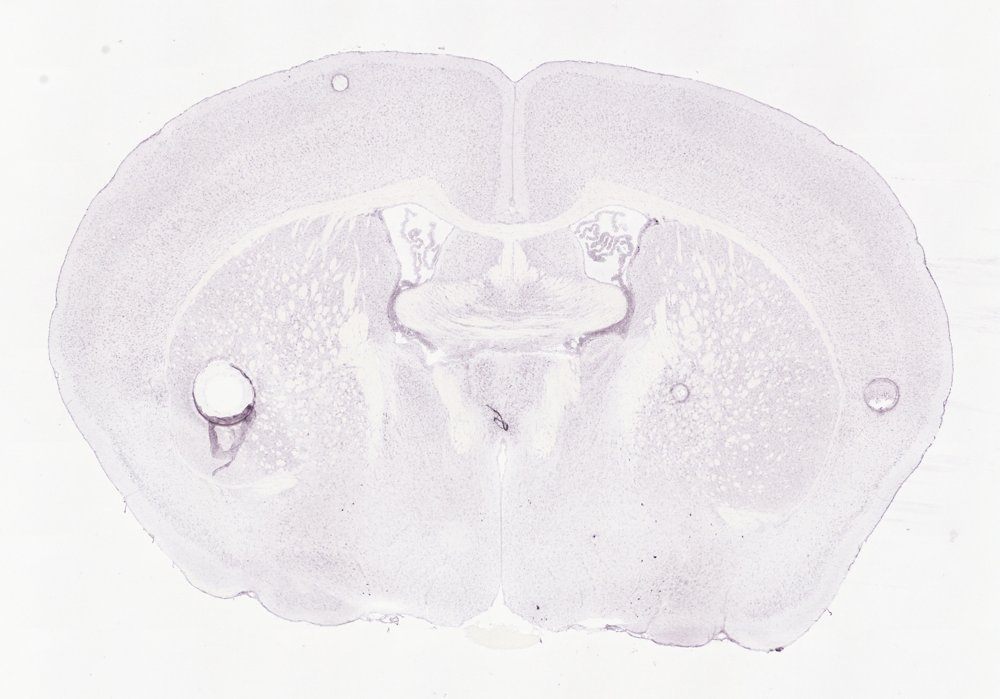
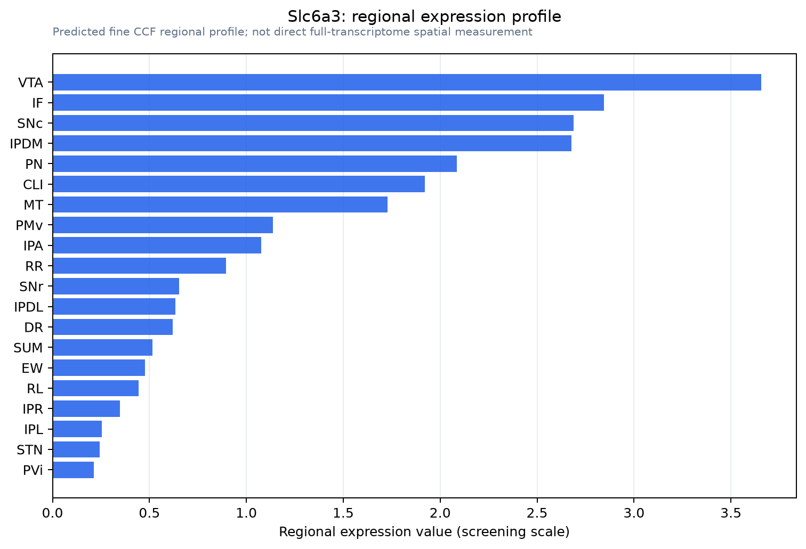

Slc6a3
Spatial tier: STRICT_EXCLUSIVE · Class: NEUROMODULATORY_SIGNAL · Top region: VTA (Ventral tegmental area) · Positive regions: 10/554
52.3Discovery Score
46.9Targetability Score
CEvidence grade C
What this means: Slc6a3: predicted fine-region profile is strict-exclusive, with 10 positive regions out of 554 (limit 12); direct spatial validation is required.
Function in VTA: evidence, prediction, innovation
- Gene function
- Slc6a3 encodes the dopamine transporter (DAT), a sodium- and chloride-dependent plasma-membrane transporter of the SLC6 family. DAT returns released dopamine to presynaptic terminals and somatodendritic membranes, terminating signalling and refilling vesicles, and is the principal target of cocaine, amphetamine and methylphenidate.
- Region function
- The ventral tegmental area contains mesolimbic and mesocortical dopamine neurons projecting to nucleus accumbens, prefrontal cortex and amygdala, signalling reward prediction error and driving motivation.
- Published in this region
- direct Direct and extensive. DAT defines VTA and SNc dopamine neurons; DAT-null mice show large increases in extracellular dopamine, hyperlocomotion and indifference to cocaine and amphetamine (Giros et al. 1996; Spielewoy et al. 2000). DAT-IRES-Cre drives recombination selectively in dopaminergic neurons (Backman et al. 2006), the standard entry point for modern VTA optogenetics and chemogenetics.
- Predicted function
- Prediction: little needs predicting de novo. Within VTA, DAT sets the amplitude and time course of somatodendritic and terminal dopamine transients, so graded VTA-restricted knockdown should prolong dopamine signals, elevate motivation and occlude psychostimulant reward. The frontier is heterogeneity: Slc6a3-low subpopulations, including dopamine-glutamate co-releasing neurons, are only partly captured by DAT-Cre.
- Innovation
- ★☆☆☆☆ 1/5 DAT in the VTA is one of the most intensively studied gene-region pairings in all of neuroscience.
- Tools
- Slc6a3-IRES-Cre (JAX 006660, Backman et al. 2006) and DAT-CreERT2 lines; DAT-knockout and knockdown mice; blockers GBR-12909, cocaine, methylphenidate, nomifensine; releaser amphetamine; anti-DAT antibodies; DAT PET/SPECT ligands.
- References
Direct evidence located at the region

Allen ISH experiment 79591365, section image 79605204 (section 213): the section that contains the CCF centroid of Ventral tegmental area according to the Allen image-to-atlas alignment (reference_to_image), with a 2 mm window around that point. Left: whole section, red box = window. Middle: ISH signal. Right: Allen's expression-mask view of the same window. open this image in the Allen viewer
Look it up yourself: Allen Mouse Brain ISH for Slc6a3Allen reference atlas: VTA (structure 749)ABC Atlas MERFISH viewer(in the ABC Atlas choose dataset MERFISH-C57BL6J-638850-CCF, colour cells by gene "Slc6a3" or by parcellation_substructure "VTA")All genes confined to VTA + 3-D brain
Direct spatial evidence
MERFISH REGION LOCATOR

DIRECT ALLEN ISH

DIRECT ALLEN ISH

Regional expression figure

Predicted WMB × fine-CCF profile; not direct full-transcriptome spatial measurement.
Spatial profile
Evidence and specificity
- Evidence status
- PREDICTED_FINE
- Direct sources
- None; predicted localization only
- Exclusive threshold
- 12 positive regions out of 554
- Spatial specificity
- 0.479
- Top-region fraction
- 0.128
- Filter status
- PASS
Interpretation limits
- Cell-type-to-region projection is imputed expression, not direct spatial measurement.
- Adult reference atlases do not establish stability across age, sex, strain, state, or disease.
- Transcript abundance does not guarantee protein abundance or genetic-tool performance.